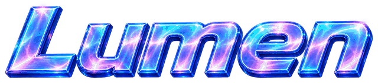
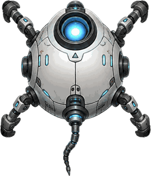

US 7,857,767 B2US 7,857,767 B2 · Lumen traveling device
A self propelling device in a vessel bed. It follows your cursor, and how far you drag is the throttle. Follow the sensor bearing to the gold plaque, which burns on its own once you arrive.
Or press R

Device lost
Or press R